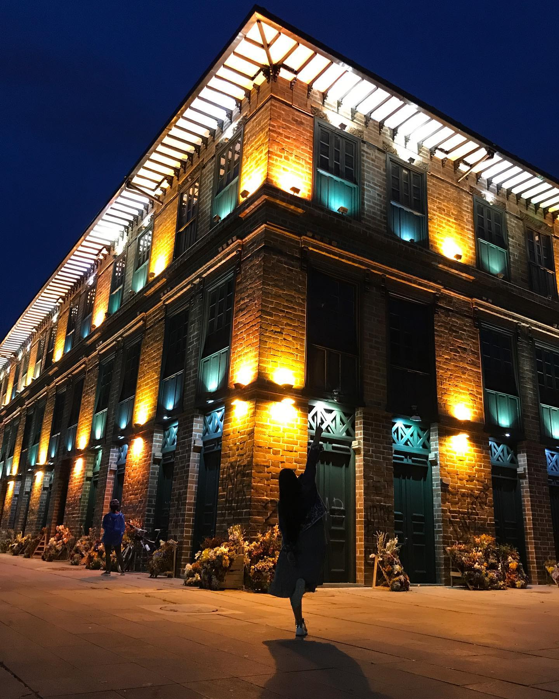
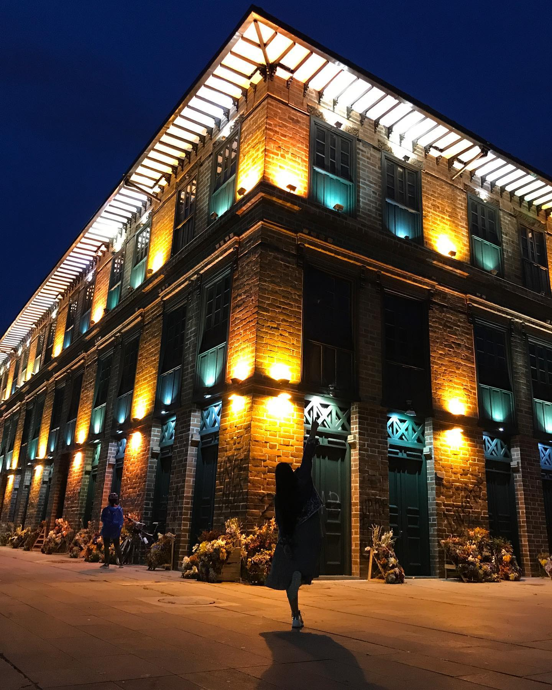
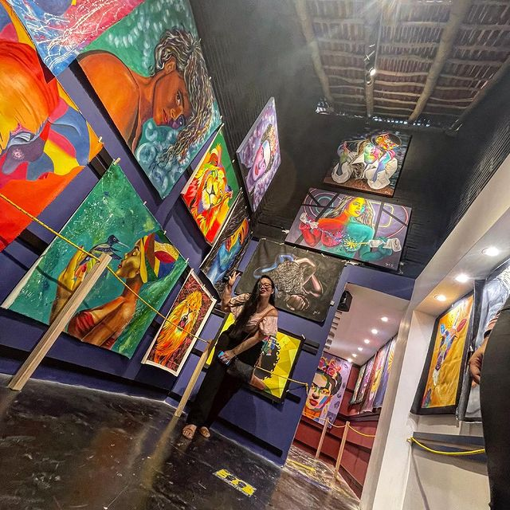
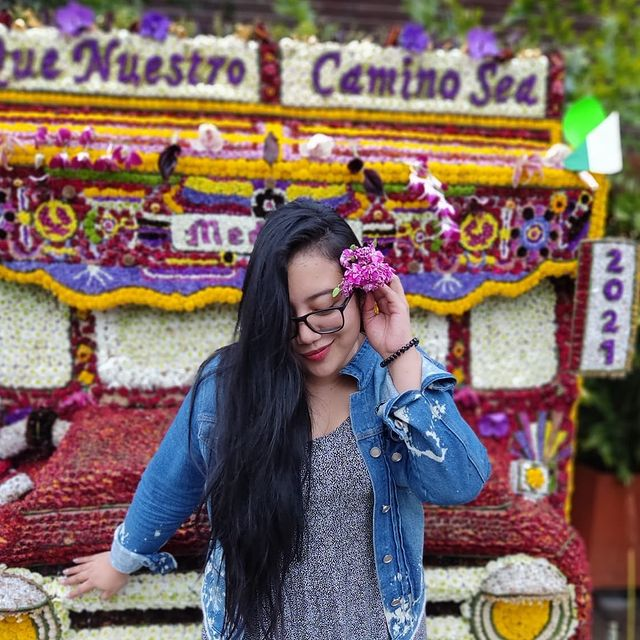

la ciudad de la eterna primavera
1. En el centro de la ciudad de Medellín podemos encontrar un lugar ícono, para los amantes de la arquitectura y fotografía, esta ubicado en la antigua plaza Cisneros.
Parque de las luces, Medellín-Colombia
1. En el centro de la ciudad de Medellín podemos encontrar un lugar ícono, para los amantes de la arquitectura y fotografía, esta ubicado en la antigua plaza Cisneros.
Parque de las luces, Medellín-Colombia
2. Arte, color, baile y trasnformación social, son las palabras para describir este sitio en la ciudad, donde la violencia quedó solo como un recuerdo por contar.
Galería de arte comuna 13, Medellín-Colombia
3. La feria de las flores es un evento que se realiza cada año desde 1957, es un homenaje a la cultura y tradición de Antiquia.
Plaza Mayor, Medellín-Colombia